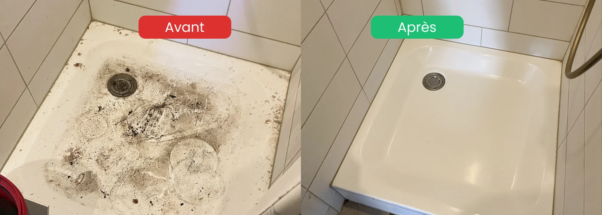

☎ +41 79 859 41 20
- 25 interventions en 2026 : toujours dans le respect et la discrétion
- Les photos aident, mais ne sont jamais obligatoires : une visite peut les remplacer
- Le prix dépend de l'état réel, pas de la surface seule : un devis sérieux passe par des photos ou une visite
- Réponse sous 24h, intervention possible sous 48h selon l'urgence
- Le tri final reste le vôtre : rien n'est jeté sans votre accord
- Discrétion totale : véhicules sans marquage si vous le souhaitez
Un message difficile à écrire
Écrire à une entreprise pour un logement insalubre n'est pas un geste anodin. On le fait souvent juste après un choc : un proche hospitalisé, un appartement découvert dans un état inattendu, une période personnelle très difficile. La honte et la fatigue sont normales.
Les messages que nous recevons sont presque toujours courts, et c'est très bien ainsi. Quelque chose comme : « Ma mère a été hospitalisée, son appartement est dans un état très préoccupant, pouvez-vous intervenir rapidement ? » suffit pour que nous puissions vous répondre.
Les informations utiles pour un devis fiable
| Information | Pourquoi elle est utile | Si vous ne savez pas |
|---|---|---|
| Commune | Zone, délai, déplacement | Indiquer au moins la commune |
| Type et taille (studio, 2.5 pièces, maison) | Estimer la durée et la taille de l'équipe | Un ordre de grandeur suffit |
| État général (encombrement, saleté, odeurs, moisissures, nuisibles) | Prévoir le matériel et la protection | Décrire avec vos mots |
| Pièces concernées (cuisine, salle de bain, WC, literie, tout) | Cadrer les prestations | « Tout » est une réponse valable |
| Urgence (retour de l'hôpital, remise de clés, vente) | Planifier l'intervention | Indiquer la date si vous la connaissez |
| Ce qui doit être conservé (papiers, souvenirs, objets de valeur) | Organiser le tri | Cela peut se décider sur place |
| Accès (clés, étage, ascenseur) | Anticiper la logistique | À préciser plus tard |
Les photos : utiles, jamais obligatoires
Les photos permettent d'estimer le volume et l'état avant de nous déplacer. Mais entrer dans le logement n'est pas toujours facile à vivre. Si c'est trop pénible, dites-le simplement : nous passons sur place, la visite dure en général entre 30 et 60 minutes.
Si vous choisissez d'envoyer des photos :
- Photographier chaque pièce avec une vue d'ensemble, sans chercher le détail
- Ajouter une photo de la cuisine et de la salle de bain, qui orientent le plus le devis
- Signaler tout ce qui vous inquiète (odeurs, moisissures, présence de nuisibles)
- Ne pas déplacer ni jeter d'objets avant notre passage
Les prestations que vous pouvez demander
Vous n'avez pas besoin de tout demander. Beaucoup de familles commencent par l'essentiel avant le retour d'un proche.
- Tri et désencombrement du logement
- Évacuation des déchets et des objets à jeter
- Nettoyage en profondeur de la cuisine, de la salle de bain et des WC
- Désinfecter les zones sensibles (WC, joints, poignées, surfaces de contact)
- Literie : lavage ou évacuation selon l'état
- Nettoyage final de l'ensemble du logement

Ce qui fait varier le prix
Nous ne donnons jamais de prix au téléphone sans avoir vu ou évalué la situation. Un prix annoncé à l'aveugle est un prix qui change ensuite. Voici ce qui détermine réellement le devis :
| Facteur | Effet sur le devis |
|---|---|
| Volume à évacuer | Le facteur principal |
| Surface et nombre de pièces | Durée et taille de l'équipe |
| État sanitaire (matières organiques, moisissures, nuisibles) | Matériel, protection, produits |
| Accès (étage, ascenseur, stationnement) | Temps de manutention |
| Urgence (sous 48h, weekend) | Planification de l'équipe |
| Distance | Déplacement |
| Prestations choisies | Désinfection, literie, remise en état |
Une fois le devis établi, le prix est fixe, sans supplément après l'intervention.
Les délais : à quoi s'attendre
Nous répondons sous 24h, y compris le week-end quand l'urgence le justifie. Après la visite, le devis vous est envoyé dans la journée. Dès qu'il est signé, nous bloquons les créneaux : l'intervention peut avoir lieu le lendemain en cas d'urgence, ou sous 48h selon nos disponibilités.
Ce qui se passe après votre message
- Réponse sous 24h, par message ou par appel, sans jugement
- Quelques questions essentielles : commune, taille du logement, état, urgence
- Photos ou visite, selon ce que vous préférez (30 à 60 minutes, discrète)
- Devis écrit à prix fixe, envoyé dans la journée, sans engagement
- Dès votre accord, planification : le lendemain en cas d'urgence, sous 48h sinon
- Tri avec vous, et photos avant/après si vous n'êtes pas présent
Les questions à poser avant de signer
N'hésitez pas à demander :
- L'entreprise intervient-elle dans ma commune ?
- Quel est le délai entre la visite et l'intervention ?
- Le devis est-il un prix fixe ?
- Qui décide de ce qui est jeté ou conservé ?
- Les véhicules et les équipes sont-ils discrets ?
- L'entreprise est-elle assurée (RC Pro) ?
- Que devient ce qui est évacué (tri, recyclage, dons) ?
Une entreprise sérieuse répond à chacune de ces questions sans détour.
Besoin d'une intervention discrète et sans jugement ?
Nettoyage de logement insalubre · Vaud & Fribourg
Voir le service insalubre →Si le logement est celui d'un proche hospitalisé
C'est la situation que nous rencontrons le plus souvent. Quelques repères :
- Si votre proche est en état de décider, son accord est important, au moins sur le principe
- Le tri final se fait avec vous, jamais sans vous
- Il n'est pas nécessaire que le logement soit prêt avant son retour : certaines familles préfèrent traiter d'abord la cuisine, la salle de bain et le lit
- Rien de tout cela n'est de votre faute : la personne a souvent tout fait pour que vous ne voyiez rien
Jusqu'où nous intervenons
Notre zone principale est la Broye vaudoise et fribourgeoise, ainsi que les cantons de Vaud et Fribourg. Peu d'entreprises proposent ce type d'intervention : c'est pourquoi des familles nous contactent de plus loin. Nous nous sommes récemment déplacés jusqu'en Valais pour une situation de ce type.
Si vous êtes hors de notre zone habituelle, écrivez-nous quand même avec votre commune. Nous vous répondons vite pour dire si nous pouvons intervenir.
FAQ – Devis de nettoyage insalubre
Faut-il envoyer des photos pour obtenir un devis ?
Non, pas obligatoirement. Les photos accélèrent l'estimation, mais si elles sont trop difficiles à prendre, une visite sur place les remplace. Dites-le simplement dans votre message.
Peut-on obtenir un prix par téléphone ?
Non, pas un prix fiable. Nous donnons une fourchette indicative à la visite, puis un devis écrit à prix fixe dans la journée. Un prix annoncé sans avoir vu le logement change presque toujours après coup.
Peut-on demander le nettoyage de certaines pièces seulement ?
Oui. Beaucoup de familles demandent d'abord la cuisine, la salle de bain, les WC et la literie, par exemple avant le retour d'un proche de l'hôpital. Le reste peut suivre plus tard.
Intervenez-vous en dehors de la Broye ?
Oui, selon la situation. Nous couvrons Vaud et Fribourg, et nous nous déplaçons plus loin quand le besoin est réel, récemment jusqu'en Valais. Écrivez-nous avec votre commune, nous vous répondons sous 24h.
Faut-il être présent pendant l'intervention ?
Pas nécessairement. Beaucoup de clients nous confient les clés et reçoivent des photos avant/après. Pour les objets personnels ou les documents, une présence au début et à la fin est recommandée.
En résumé
Demander un devis de nettoyage insalubre n'exige pas un dossier : la commune, la taille du logement, son état et l'urgence suffisent. Les photos aident sans être obligatoires, le prix dépend de l'état réel et non de la surface seule, et le tri reste toujours entre vos mains. Le plus difficile est d'écrire le premier message. Le reste, nous nous en occupons, avec discrétion et sans jugement.
Ressources d'aide en Suisse
- 143 — La Main Tendue : écoute anonyme 24h/24, pour vous aussi
- 144 — Urgences : en cas de danger immédiat
- CMS (Centre médico-social) : aide à domicile et accompagnement social
- Pro Senectute : soutien aux personnes âgées et à leur famille
- Pro Mente Sana : information et soutien en santé mentale
- Votre médecin traitant : premier interlocuteur de confiance